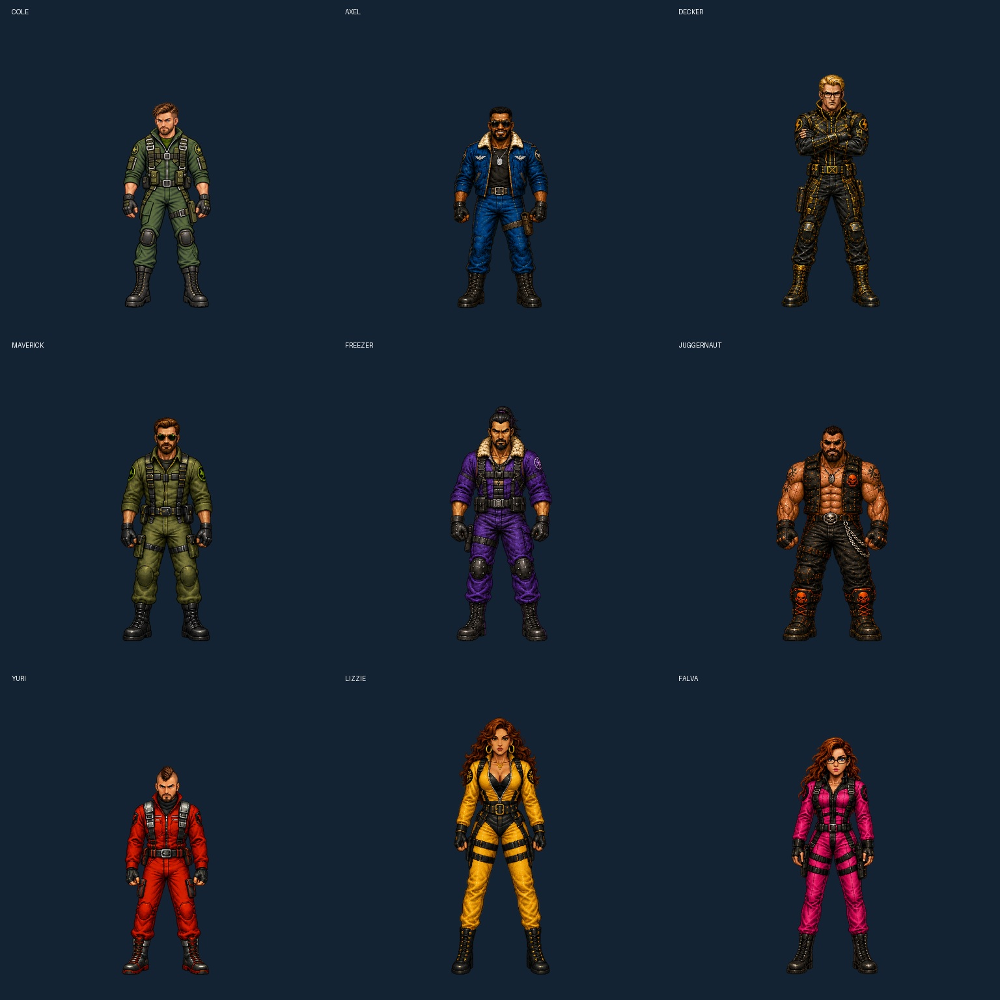

All nine Fury pilots, six authored full-body key poses each. Current dialogue portraits guide the faces; full-body references guide the costumes. These are individual cutscene poses, with walking and rear views, rather than a continuous animation reel.
Frame manifest · Exact generation prompts
Ribbed dome, outward horns and one curved blue visor, derived from his live Stage 5 body. The neutral avatar replaces the existing dialogue aliases; the three alternate views are available for cutscene use. His native ending portrait fade stays in place.
